10 部片单 · 恐怖 / 科幻 / 惊悚 / 悬疑 / 剧情
| # | 片名 | 类型 | 评分 / 状态 |
|---|---|---|---|
| 01 | 低俗小说 | 剧情 / 犯罪 / 黑色喜剧（美国 · 洛杉矶，一夜到天亮的三段插曲） | 8.8 / 92% / 94 |
| 02 | 盗火线 | 犯罪 / 惊悚 / 剧情（美国 · 洛杉矶，从一场运钞车劫案到机场决战的一天一夜） | 8.5 / 84% / 76 |
| 03 | 训练日 | 犯罪 / 惊悚 / 剧情（美国 · 洛杉矶，一个菜鸟警探的入职第一天） | 8.1 / 74% / 71 |
| 04 | 罪恶之城 | 惊悚 / 犯罪 / 悬疑 · 新黑色（美国 · 盆地城，警察与暴徒已无分别的一夜） | 8.4 / 77% / 74 |
| 05 | 突袭 | 动作 / 惊悚 / 犯罪（印度尼西亚 · 雅加达，一栋旧楼里的一夜） | 7.9 / 86% / 7.6 |
| 06 | 你是下一个 | 惊悚 / 恐怖 / 黑色喜剧（美国 · 一栋乡间大宅的团圆夜） | 6.9 / 79% / 66 |
| 07 | 维多利亚 | 惊悚 / 犯罪 / 剧情（德国 · 柏林，从夜店到天亮的一镜到底） | 7.1 |
| 08 | 极寒之城 | 动作 / 惊悚 / 悬疑（美国 / 德国 · 1989 年柏林墙倒塌前的一周） | 7.2 / 79% / 63 |
| 09 | 好时光 | 惊悚 / 犯罪 / 剧情（美国 · 纽约，从入夜到天亮的十几个小时） | 7.4 / 91% / 80 |
| 10 | 嗜人之夜 | 动作 / 惊悚 / 犯罪（印度尼西亚 · 雅加达，三合会内部的一个晚上） | 6.9 / 91% / 6.9 |
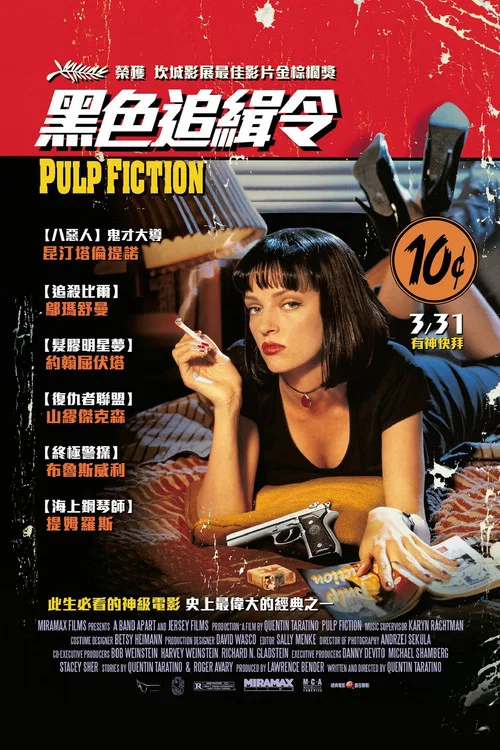
低俗小说 Pulp Fiction
「三段插曲拼成的一个夜晚，拼完你会发现开头就是结尾。」
剧情梗概
洛杉矶。杀手文森特受老大的命陪他的女人米娅出门吃饭，一晚上只需守住一条规矩：不许碰她。另一条街上，杀手朱尔斯在动手前照例背一段《以西结书》，却在一次清场之后决定金盆洗手。地下室里，过气拳击手布奇拿了黑社会的钱不办事，只想带着一块祖传金表远走高飞。三个故事的时间线是乱的——等你看到结尾那家小餐馆，会发现整个圆环从头到尾只走了几个小时。
亮点
- 昆汀·塔伦蒂诺导演，与罗杰·阿夫瑞联合编剧（两人同拿奥斯卡最佳原创剧本）；本片在 1994 年拿下戛纳金棕榈奖。
- 成本约 850 万美元，全球票房约 1.2 亿美元——以一己之力把「邪典」抬进了颁奖季的正厅。
- 全片的时间线故意打乱：三个故事加首尾的餐馆段落，实际跨度只有几个小时——这是本片成为教科书的第一原因。
- 乌玛·瑟曼与特拉沃尔塔在「杰克兔斯林」餐厅那场扭扭舞比赛与五美元奶昔，是九十年代被模仿最多的电影场面之一。
- 约翰·特拉沃尔塔此前被认为已经过气（《油脂》已是十六年前），本片让他直接重回一线；塞缪尔·杰克逊那段圣经独白，让他第一次拿到奥斯卡提名（最佳男配角）。
- 第 67 届奥斯卡七项提名、只拿下一座最佳原创剧本——败给它的包括《阿甘正传》与《肖申克的救赎》那一届的诸多强手。
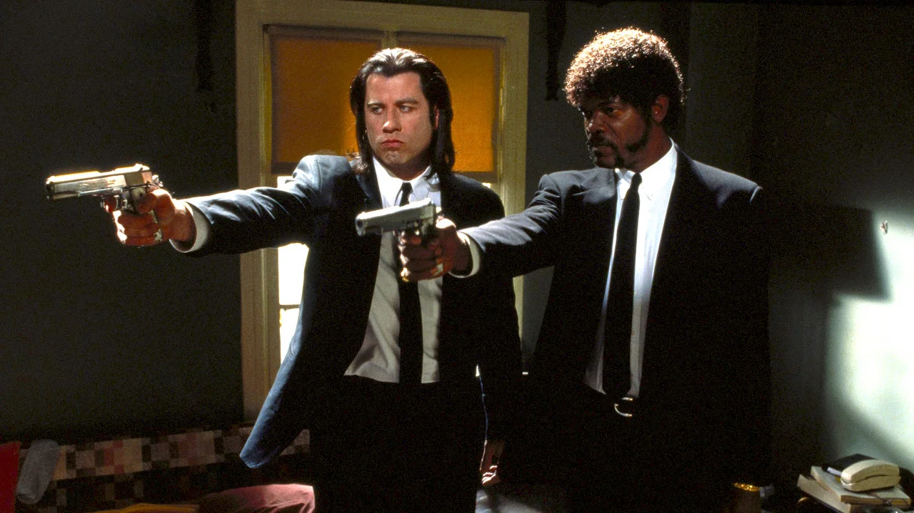
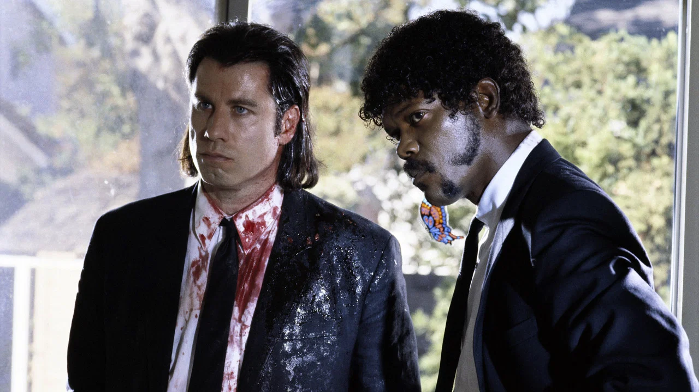
导演与主创 · 他们的历史作品

 被解救的姜戈
被解救的姜戈 无耻混蛋
无耻混蛋 杀死比尔
杀死比尔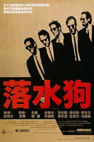
落水狗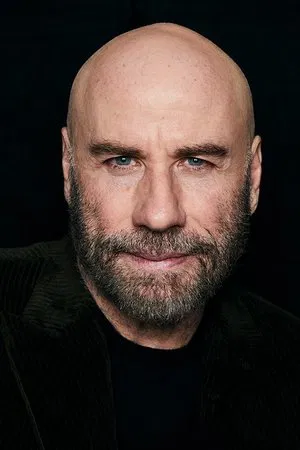
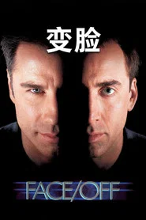
变脸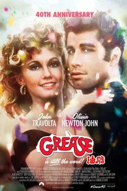
油脂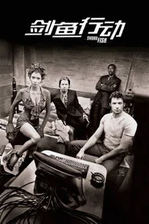
剑鱼行动
 八恶人
八恶人 美国队长2
美国队长2 惊奇队长
惊奇队长 王牌特工：特工学院
王牌特工：特工学院短评（轻微剧透）
轻微剧透：全片最著名的反转不在任何一场戏里，而在结构——文森特在地下室被一枪放倒之后，观众才意识到自己早就见过他：布奇那段里，厕所门口那具「尸体」就是他。轻微剧透：塔伦蒂诺最狠的一笔，是让朱尔斯在片中小餐馆里把同一段《以西结书》又背了一遍——第一次念完，是人死了；第二次念完，是他决定不杀了。一个晚上能被拍成圆环，靠的不是剪辑技巧，是他相信「废话」本身就是叙事：两个杀手能就汉堡包的昵称聊上半分钟，而就在这一分钟里，观众已经站到了他们那边。
为什么值得一看
想看「叙事能被玩到什么程度还不显得油滑」的人；能接受大量粗口、暴力直接、结构刻意绕人的观众。R 级，建议成年观看。内地未映，流媒体可看。看完想继续：《落水狗》（导演处女作）、《无耻混蛋》（导演）、《四个房间》（塔伦蒂诺执导其中一段）。
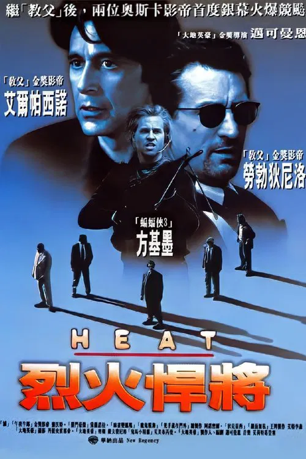
盗火线 Heat
「“别让你自己依附任何你三十秒内丢不掉的东西。”」
剧情梗概
洛杉矶重案组探长文森特·汉纳抓贼不要命，三段婚姻全赔在了这台机器上。职业匪徒尼尔·麦考利干完最后一票就打算收山，手下的兄弟、新交的女友都劝他别回头。两个人隔着一条街互相读了半辈子，终于在一场运钞车劫案后短兵相接——汉纳越追越近，尼尔的团队却开始散架。等他们在咖啡馆面对面坐下，警与匪的分界已经薄得像一张桌布；而机场跑道上的最后一场枪战，两个人都没有退路。
亮点
- 迈克尔·曼导演、编剧、制片——剧本的前身是他 1979 年没拍成的电视剧本《洛杉矶追击令》，十五年后他把同一个故事重搬上大银幕。
- 成本约 6000 万美元，北美约 6740 万、全球约 1.2 亿美元。
- 阿尔·帕西诺与罗伯特·德尼罗此前在《教父2》里同片不同场，本片是两人第一次真正同框对戏；咖啡馆那场戏只有几分钟，却成了整个警匪类型的缩影。
- 市区那场枪战的动静是「真的」：演员提前数周接受实弹与战术训练，成片里的枪声、换弹与玻璃碎裂几乎全部实录，没有用拟音替代。
- 全片 170 分钟几乎没有传统意义的「反派交代」：汉纳的偏执与尼尔的纪律被放在同一盏灯下照明——这是它和所有警匪片不一样的地方。
- 一个有趣的注脚：这部片当年一项奥斯卡提名都没拿到，二十多年后它却稳居各类「史上最佳警匪片」榜单的前排。
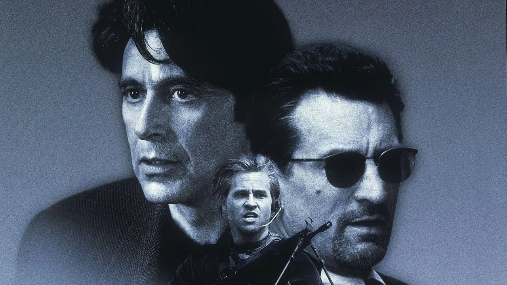
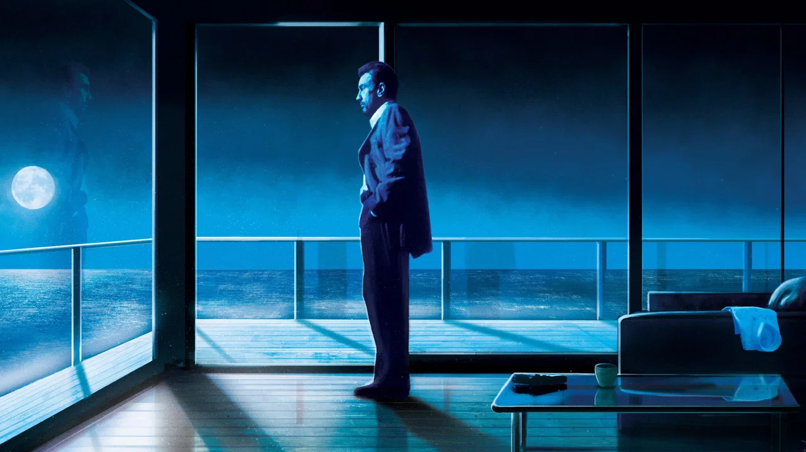
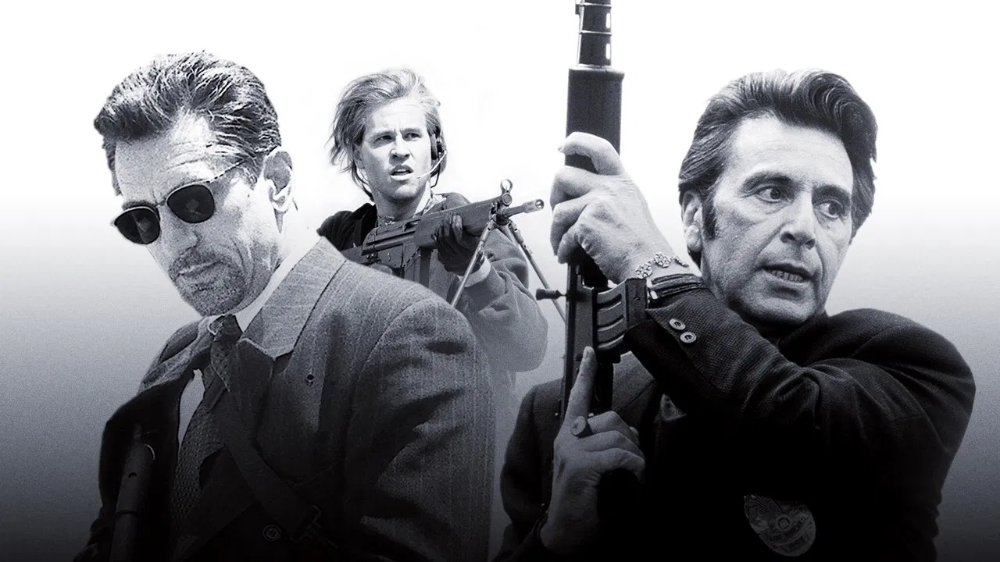
导演与主创 · 他们的历史作品

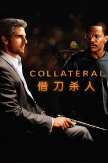
借刀杀人 公众之敌
公众之敌 最后的莫希干人
最后的莫希干人 骇客交锋
骇客交锋
 教父2
教父2 疤面煞星
疤面煞星 教父
教父 教父3
教父3
 好家伙
好家伙 小丑
小丑 出租车司机
出租车司机 爱尔兰人
爱尔兰人短评（轻微剧透）
轻微剧透：全片最疼的一场戏是尼尔在机场听见叛徒名字之后的那几秒——他本来已经准备登机，却在廊桥口转身。轻微剧透：迈克尔·曼把「孤独」拍成了两个人的共同点：汉纳下班回家面对的是空房子和前任的妻子，尼尔金盆洗手后连一顿安稳饭都吃不上。结尾尼尔死在跑道尽头，汉纳握住他的手，两个人第一次也是唯一一次平视——整部片追了两个半小时，追的就是这一眼。
为什么值得一看
想看「警匪片能被拍得多像一部关于成年人的悲剧」的人；能接受 170 分钟慢热、对白密、枪战音效极其响的观众。R 级，建议成年观看。内地未映，流媒体与蓝光可看。看完想继续：《借刀杀人》（同一导演，往期推荐过）、《公众之敌》（同一导演）、《局内人》（往期推荐过的同类）。
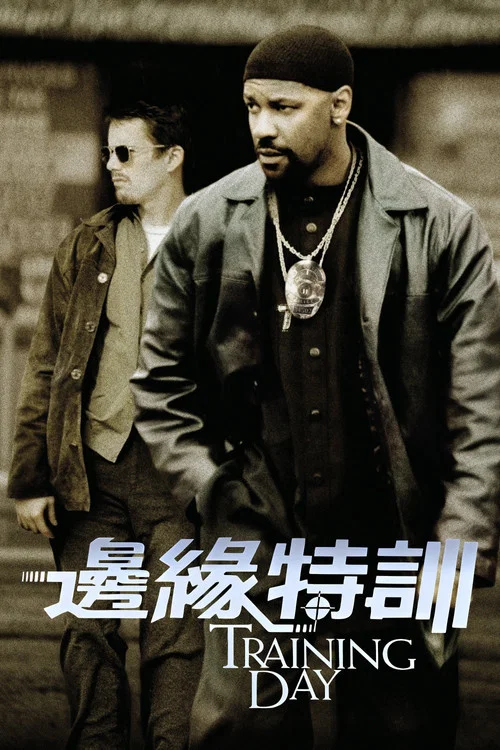
训练日 Training Day
「“金刚都没我横。”」
剧情梗概
杰克·霍伊特入职洛杉矶缉毒部的第一天，被派给「魔幻之眼」阿洛佐·哈里斯带一天。阿洛佐不按手册来：先是抢学生的钱，再逼线口服毒，然后拿搜查令当擦脚布，最后向俄国黑手党借了一笔越滚越大的债。一整天里，杰克每一次说「这不对」，阿洛佐都能用一套更大的道理把它压回去——狼群、地盘、规矩。等天亮了，这个新人带回警局的不是心得，是一整晚的证据。
亮点
- 安东尼·福奎阿导演，大卫·阿耶编剧——剧本来自后者对洛杉矶警匪生态的长期观察。
- 丹泽尔·华盛顿凭阿洛佐拿下第 74 届奥斯卡最佳男主角（他的第二座小金人）；伊桑·霍克提名最佳男配角。
- 成本约 4500 万美元，全球约 1.05 亿美元。
- 阿洛佐在小酒馆里那段「要做狼」的独白，是近二十年被短视频剪得最多的台词之一——它把腐败讲成了一套成功学。
- 全片的时钟叙事：入职、抢钱、夜店、赌场、追杀，最后一天结束在清晨——本片把「一天」拍成了一个人全部的信仰崩塌。
- 本片后来被 CBS 开发成剧集（《训练日》2017，短命），证明了它的世界观比电影本身更耐用。
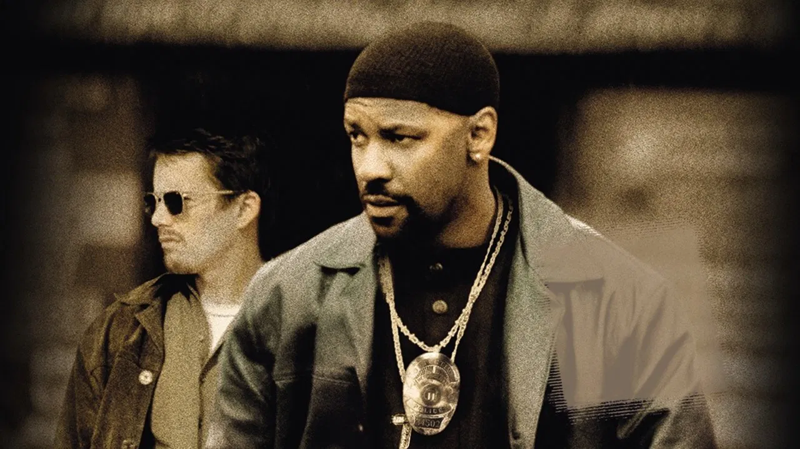
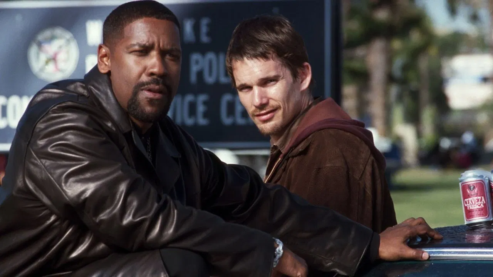
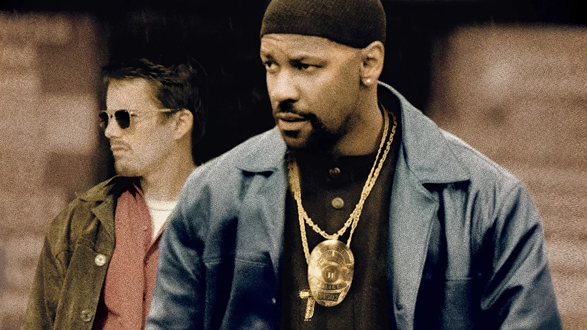
导演与主创 · 他们的历史作品

 伸冤人
伸冤人 奥林匹斯的陷落
奥林匹斯的陷落 豪勇七蛟龙
豪勇七蛟龙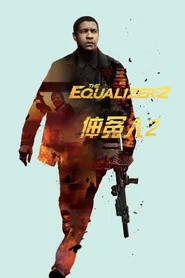
伸冤人2 伸冤人
伸冤人 艾利之书
艾利之书 迫降航班
迫降航班 局内人
局内人
 人类清除计划
人类清除计划 前目的地
前目的地 千钧一发
千钧一发 险恶
险恶短评（轻微剧透）
轻微剧透：全片最狠的一场戏不是结尾的围剿，是阿洛佐把钱摊在桌上让杰克选——收下，就是同伙；不收，就是下一个被「处理」的人。轻微剧透：福奎阿把「腐败」拍成了一门语言：阿洛佐说的每一句话单看都对，加起来却全是错的。结尾他倒在自己家门口，杰克开车从他身边过去——没有配乐，没有台词，这一镜比任何一场枪战都更像判决。
为什么值得一看
想看「一个演员能把『迷人的坏人』演到多精确」的人；能接受暴力与胁迫场面直接、价值观极度不适的观众。R 级，建议成年观看。内地未映，流媒体可看。看完想继续：《伸冤人》（同导演 + 同主演的组合）、《洛城机密》（往期推荐过的洛杉矶警匪另一面）。
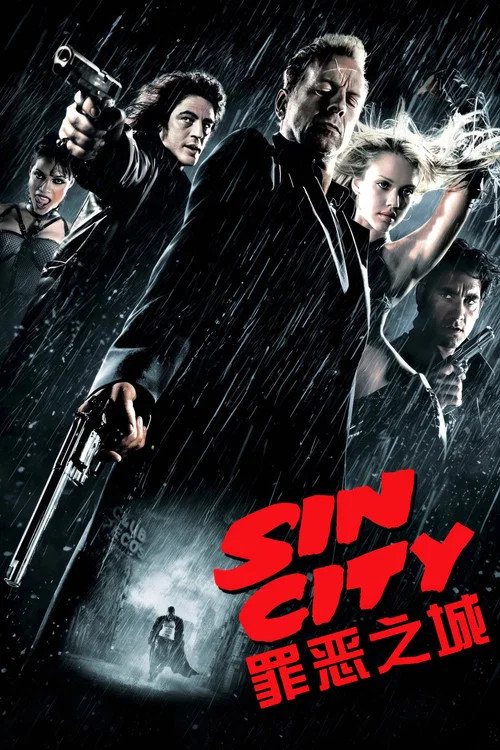
罪恶之城 Sin City
「“欢迎来到罪恶之城——这里的夜晚比白天长。”」
剧情梗概
盆地城，一座警察和暴徒已经无从区分的城市。三个故事在这里交叠：快退休的壮汉马弗为了一个妓女的一句话，一个人去拆整座城市的黑帮；老城区的姑娘们为了守住地盘，把一群男人引进了屠宰场；还有最后一年任期的好警察哈特根，为了从议员手里救出一个十一岁的女孩，把自己送进了牢里。三个故事都发生在同一个晚上——罪恶之城的一夜，比任何城市的十年都长。
亮点
- 罗伯特·罗德里格兹与漫画原作者弗兰克·米勒联合执导；昆汀·塔伦蒂诺以「一美元片酬」客串执导了一场戏，成了本片最著名的幕后轶事。
- 成本约 4000 万美元，全球约 1.59 亿美元；2005 年戛纳电影节技术大奖。
- 影像上它几乎是一部「会动的漫画」：全片以高清数字摄影机拍摄后做逐帧处理，黑白为底，只保留唇色、血与霓虹。
- 米基·洛克凭马弗拿下土星奖最佳男配角——这个角色几乎就是为他写的，连皱纹都是道具。
- 三个故事共享同一座城、同一个夜晚：暴力在这里不是情节，是这座城市的天气。
- 本片之后，《斯巴达300勇士》这类「绿幕 + 高对比调色」的影像语言才真正流行起来——它的影响比评分显示的更远。
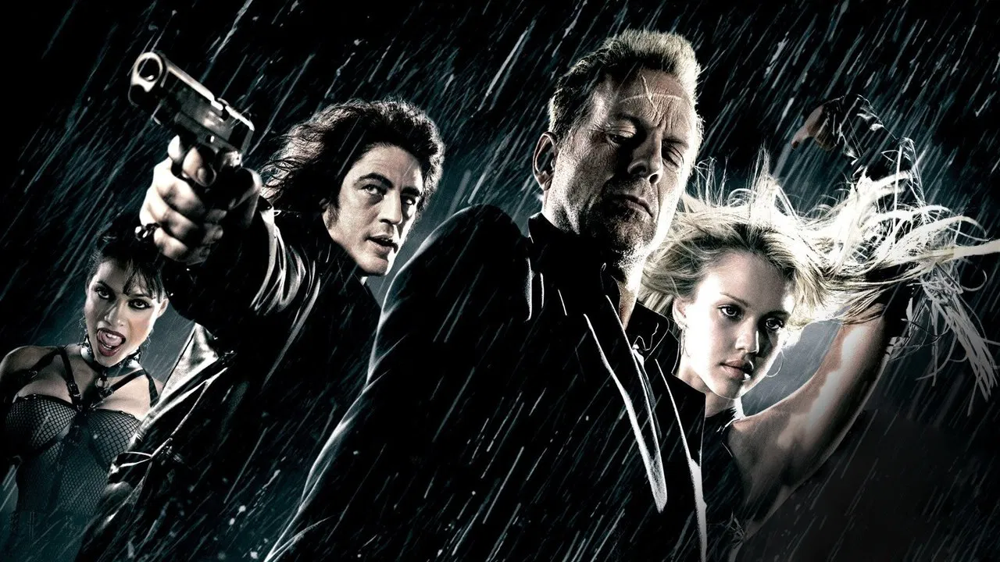
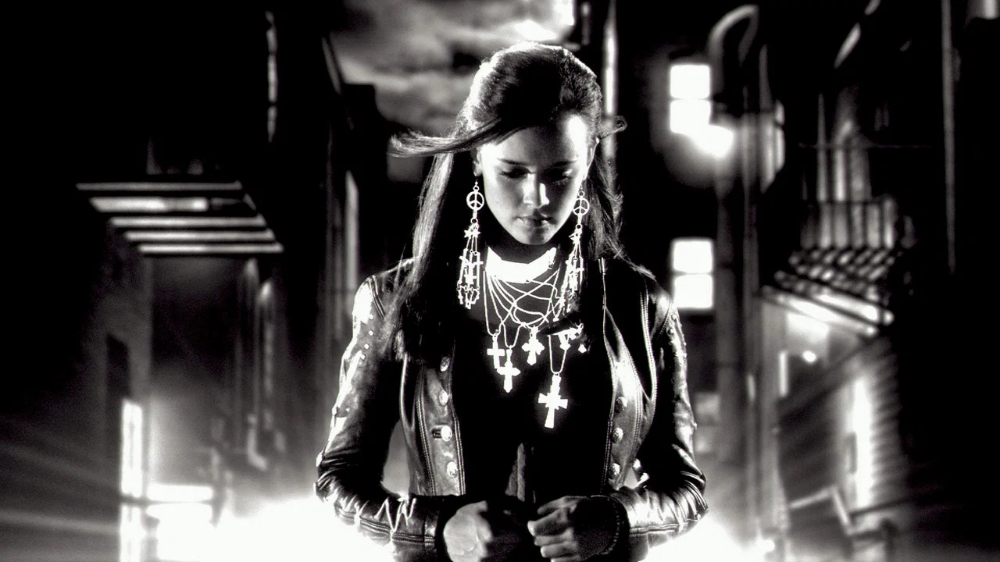
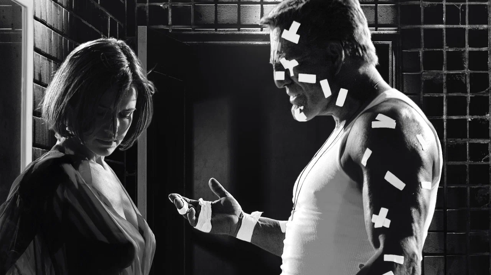
导演与主创 · 他们的历史作品

 阿丽塔：战斗天使
阿丽塔：战斗天使 杀出个黎明
杀出个黎明 罪恶之城2：蛇蝎美人
罪恶之城2：蛇蝎美人 恐怖星球
恐怖星球
 第六感
第六感 虎胆龙威
虎胆龙威 第五元素
第五元素 不死劫
不死劫 钢铁侠2
钢铁侠2 天使之心
天使之心短评（轻微剧透）
轻微剧透：全片最动人的一幕发生在第二个故事里——老城区的妓女们端着枪从阴影里走出来，把一群男人打成了筛子。轻微剧透：罗德里格兹与米勒最狠的一笔，是让三个故事里的「好人」全都没有好报：马弗为一句承诺死、哈特根为一次善举把自己关进牢里、德怀特活下来却永远欠着一条命。这座城奖励的从来不是正义，是姿态。
为什么值得一看
想看「风格能被推到多极端还不出戏」的人；能接受极端风格化暴力、对白刻意粗粝、以及它本质上是一部黑白漫画的观众。R 级，建议成年观看。内地未映。看完想继续：《罪恶之城2：蛇蝎美人》（口碑断层，慎重点开）、罗伯特·罗德里格兹的《杀出个黎明》、弗兰克·米勒的原著漫画。
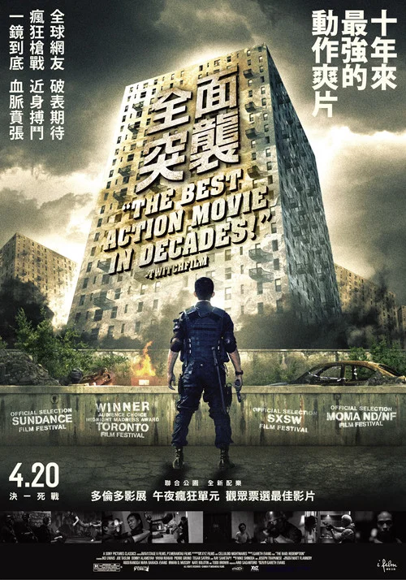
突袭 The Raid
「“一栋楼，三十层，从一楼打到楼顶。”」
剧情梗概
雅加达。一支特警队在清晨开进一栋破旧的公寓楼，目标是盘踞在里面的黑帮头目塔玛。计划是快速突入、快速撤离；实际上他们刚进楼就被困住，整栋楼变成了一座垂直的迷宫。新手警察拉玛在楼梯间、走廊与房间里一层层往上打——楼上的每一个房间都住着人，每一个人都拿着武器。等天亮了，这座楼里活着的警察已经不多了。
亮点
- 加雷斯·埃文斯导演、编剧，2011 年多伦多电影节首映大获好评，2012 年起在全球公映（TMDB 按公映年份标为 2012）。
- 成本约 110 万美元——这个数字甚至不够好莱坞一部动作片的预告片预算，成片却几乎全部发生在这栋楼里。
- 主演伊科·乌艾斯自幼习练印尼传统武术班卡西拉，片中所有近身格斗由他设计并亲身上阵——没有威亚，没有快剪糊弄。
- 乔·塔斯利姆演的贾卡与雅彦·鲁伊安演的「疯狗」是两座路标：后者那场终局对决被动作片影迷反复慢放，两个班卡西拉高手在玻璃与钢筋之间打了足足几分钟。
- 剧情是公认的薄——它的全部野心都在「怎么打」上，而这一点它做到了同类的天花板。
- 本片之后好莱坞买下翻拍版权谈了多年未成，倒是「一栋楼里的动作片」成了此后十年的流行配方。
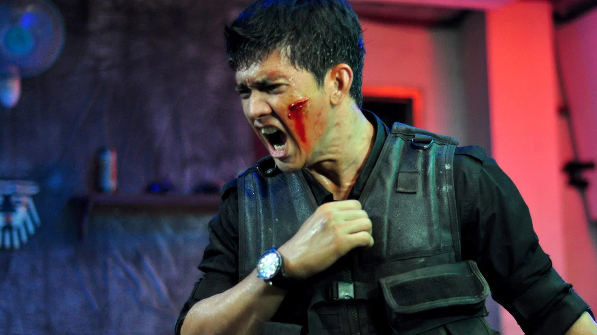
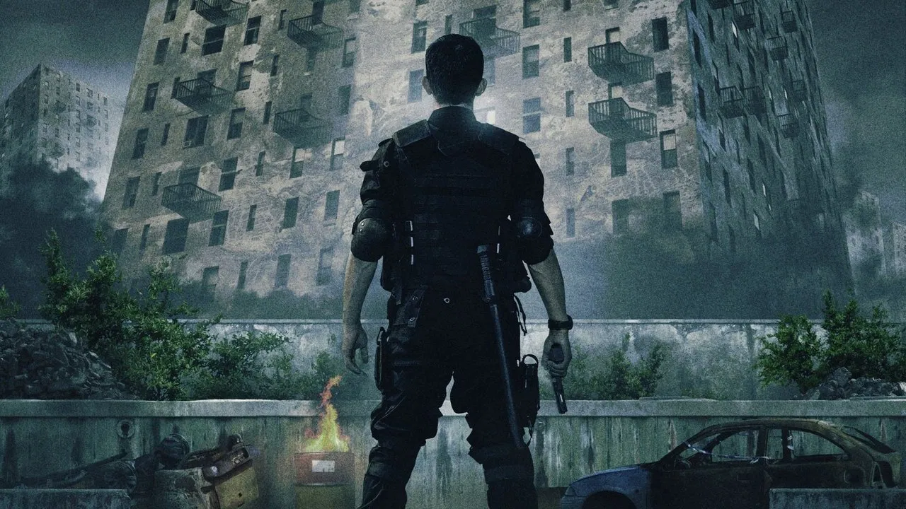
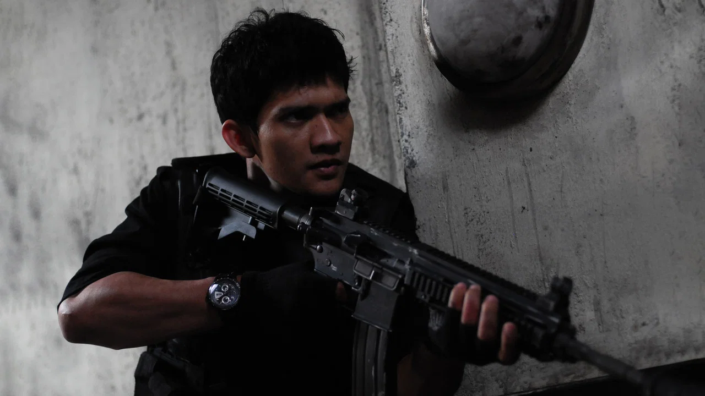
导演与主创 · 他们的历史作品
 使徒
使徒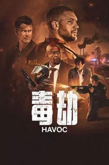
毒劫 致命录像带2
致命录像带2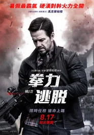
22英里 星球大战7：原力觉醒
星球大战7：原力觉醒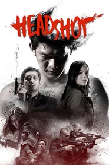
爆头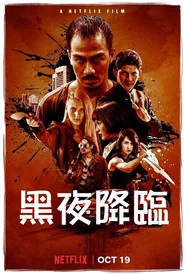
嗜人之夜 速度与激情6
速度与激情6 星际迷航3：超越星辰
星际迷航3：超越星辰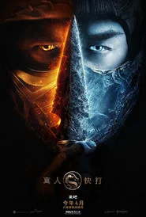
真人快打短评（轻微剧透）
轻微剧透：全片最安静的一场戏在结尾——拉玛走出楼门，天亮了，雅加达的日常照旧运转，仿佛这一夜只是这栋楼自己咽了回去。轻微剧透：埃文斯把空间用到了极致：楼层是地图，走廊是闸门，房间是棺材。看完再回想，你会记得住每一次上楼梯，却记不住任何一个「剧情转折」——这就是本片的目的：让身体替观众记住一夜。
为什么值得一看
想看「近身格斗能被拍得多实」的人；能接受剧情极薄、暴力密度极高、血浆不要钱的观众。R 级，建议成年观看。内地未映。看完想继续：《突袭2：暴徒》（格局更大，评价更高）、《嗜人之夜》（本期第 10 部，原班人马的另一部）。
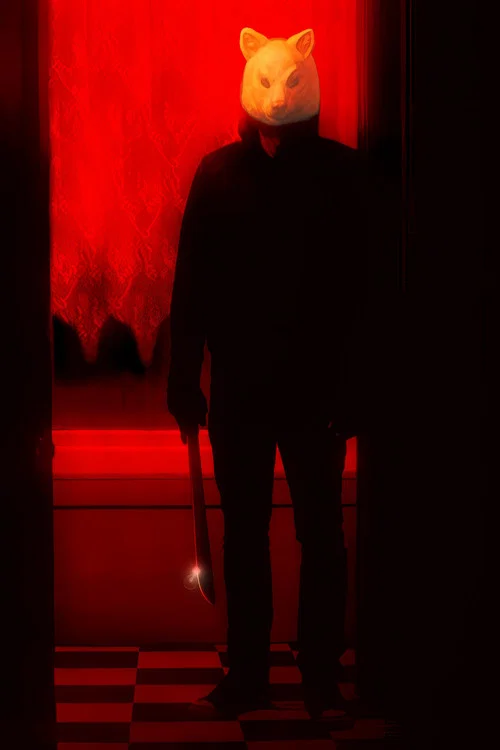
你是下一个 You're Next
「“下一个，就轮到你。”」
剧情梗概
戴维森家趁着结婚纪念日把四个子女和各自的另一半凑回乡间大宅，饭桌上的火药味比酒气还足。入夜，戴动物面具的杀手一个一个摸了进来——弩、斧头、钢琴线。这家人从互撕到抱团只用了半小时，而真正稳住局面的，是大儿子的女友艾琳：她在生存主义营地里长大，会设陷阱、会改装炸弹、能把钉子踩进脚底之后继续跑。等尸体摆了一地，面具后面的人终于意识到：他们挑错了房子，也挑错了人。
亮点
- 亚当·温加德导演，西蒙·巴雷特编剧；2011 年多伦多电影节午夜疯狂单元口碑爆发，2013 年才在北美大规模公映（TMDB 标 2013）。
- 成本约 100 万美元，北美约 1850 万、全球约 2400 万美元——以小博大的教科书案例。
- 沙妮·文森演的艾琳是近十年砍杀片里最著名的「最后一人」：她不逃、不蠢、不等救——观众喊了二十年的「她怎么不反抗」，这部片一次还清。
- 面具杀手团的设定被后来者反复借鉴；它的黑色幽默（一家人到死还在互相揭短）让它从同类里脱颖而出。
- 场面调度带着温加德一贯的「剧场感」：几乎全部的死亡都发生在观众能看清方位的空间里——它尊重你的智商。
- 烂番茄 79% / Metacritic 66 / IMDb 6.6 / 豆瓣 6.9：一部影迷口碑远大于大众口碑的 cult 片。
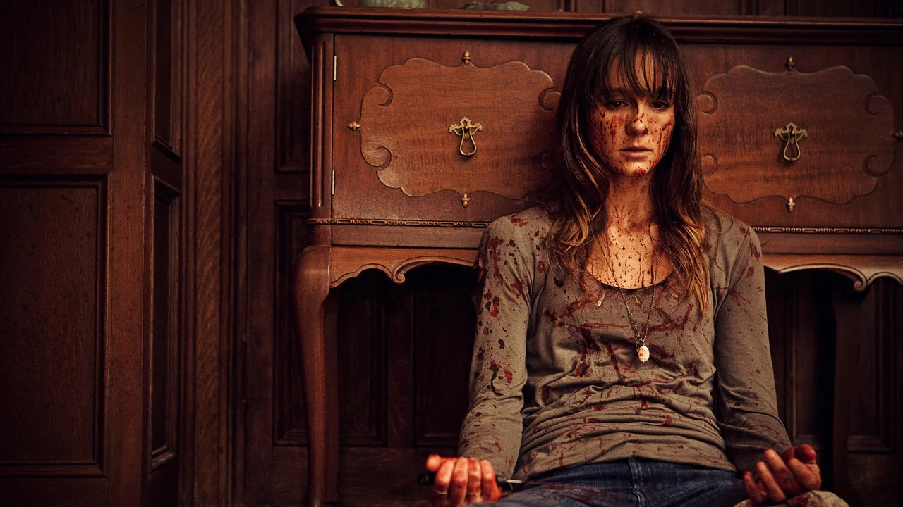
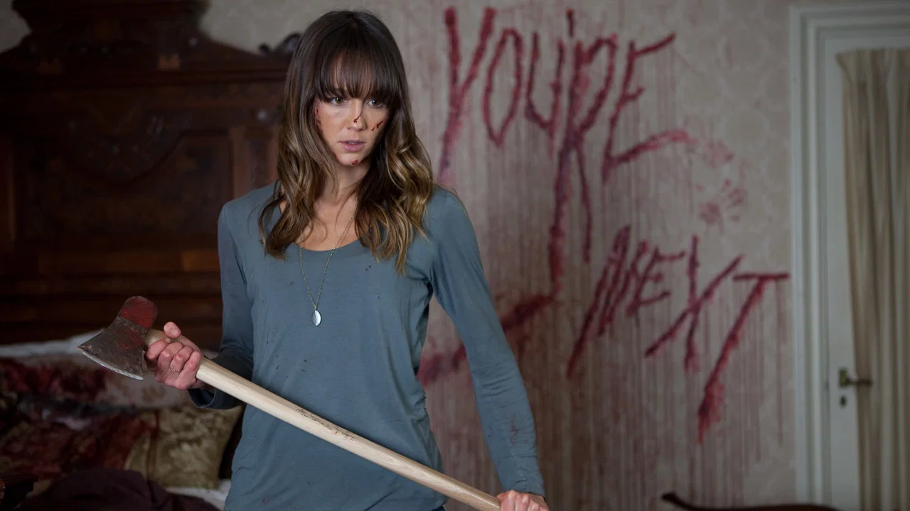
导演与主创 · 他们的历史作品

 哥斯拉大战金刚
哥斯拉大战金刚 哥斯拉大战金刚2：帝国崛起
哥斯拉大战金刚2：帝国崛起 死亡笔记
死亡笔记 不速之客
不速之客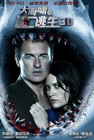
大海啸之鲨口逃生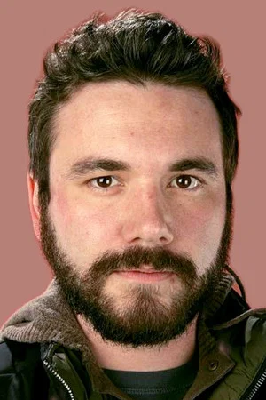
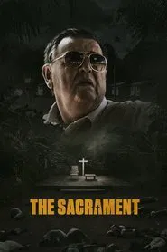
圣餐 邪恶之屋
邪恶之屋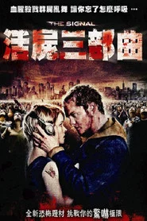
信号短评（轻微剧透）
轻微剧透：全片最大的反转不是「谁戴着面具」，是「谁雇了他们」——这顿团圆饭的发起人，正是把大家叫来送死的人。轻微剧透：温加德最妙的一笔，是让这个家庭在屠杀中第一次真正「团聚」：艾琳这个外人，反而成了戴维森家唯一像家人的成员。结尾她靠在新男友肩上听警笛渐近，是这部片唯一一次让她露出疲态——之前那两个小时，她不像活人，像一件武器。
为什么值得一看
想看「砍杀片能被写得多聪明」的人；能接受血浆夸张、黑色幽默、以及它本质上把全家人都写得很可恨的观众。R 级，建议成年观看。内地未映。看完想继续：《不速之客》（同导演）、《准备好了没》（往期推荐过的「猎杀新娘」版）、《林中小屋》（往期推荐过的「元砍杀」版）。
维多利亚 Victoria
「“凌晨四点的柏林，一个女孩答应替一群人开四个小时车。”」
剧情梗概
西班牙女孩维多利亚刚到柏林不久，在夜店门口认识了索恩和三个游荡的年轻人。两个人看对了眼，从人群里溜出来，在午夜的街头乱逛——这是她这辈子最好的几个小时。可索恩的三个朋友在楼下车里等她：他们昨晚替黑帮老大办了件事，天亮前必须把人情还上，而四个人里有一个已经醉得不省人事。他们缺一个司机。于是这个夜晚从浪漫急转直下：一辆偷来的车、一家银行的柜台、一条回不去的路。
亮点
- 全片 138 分钟，一个镜头拍完，没有藏匿剪辑点——第 65 届柏林电影节把「最佳艺术贡献奖（摄影）」的银熊颁给了它。
- 同一个凌晨连拍三条，每条都必须零失误跑完全程；最终成片用的其中一条完整素材——这种拍法在长镜头电影里几乎前所未有。
- 德国电影奖上拿下六个奖项，包括最佳剧情片、最佳导演与最佳摄影。
- 莱娅·科斯塔演的维多利亚几乎不在「表演」：她要在被追逐、尖叫、开车、崩溃之间连续切换——失误一条，全组白干一晚。
- 弗雷德里克·劳演的索恩是全片的心脏：一个在兄弟义气与良心之间反复横跳的年轻人——他每次说「就干这一票」，观众就知道要出事。
- 一镜到底在这里不是炫技：它取消了「切出去」的权利，观众只能和维多利亚一起，在这个夜里一分一秒地退不回从前。
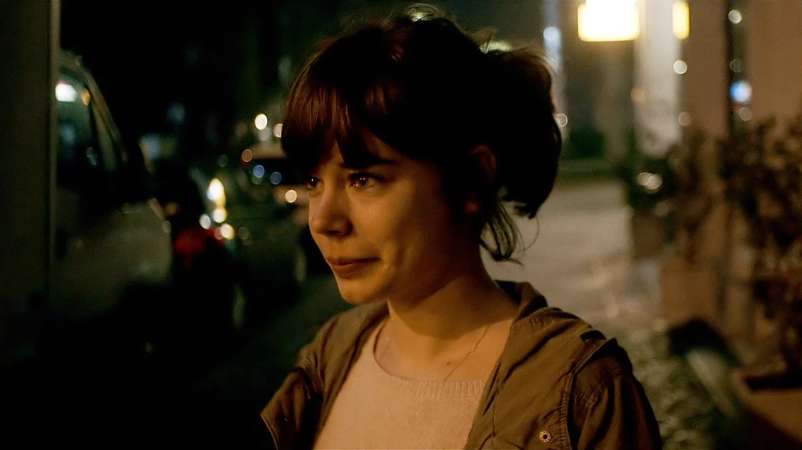
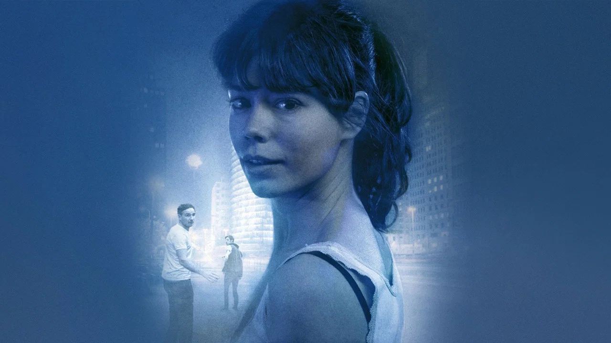
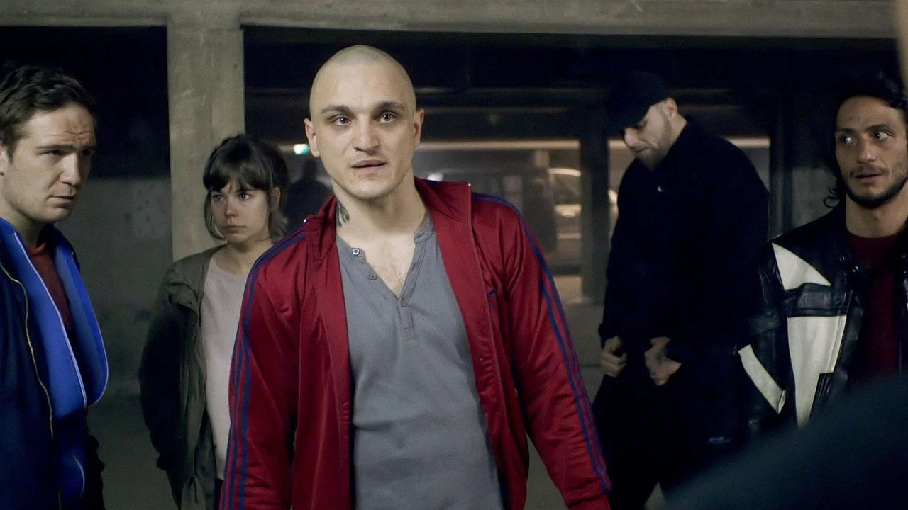
导演与主创 · 他们的历史作品
 罗拉快跑
罗拉快跑 英国病人
英国病人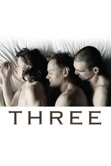
三角恋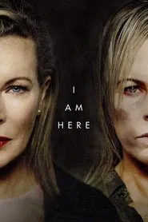
我在这里
 木乃伊
木乃伊 新奇
新奇 我需要你
我需要你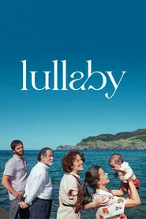
摇篮曲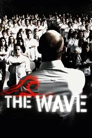
浪潮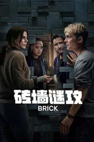
砖墙谜攻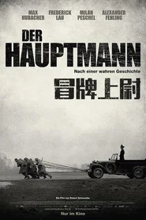
冒牌上尉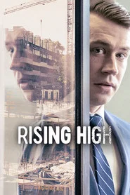
地产老千起落记短评（轻微剧透）
轻微剧透：全片最疼的一瞬不在抢劫，在抢劫之后——维多利亚坐在车里，忽然发现自己已经回不去几个小时前那个夜店门口的女孩。轻微剧透：席佩尔把「一夜」拍成了单行道：没有剪辑，就没有喘息；没有喘息，选择就再也撤销不了。结尾黎明里她独自走在街上，是全片第一次让人想起：这个城市天亮了，而她的一夜还没有结束。
为什么值得一看
想看「长镜头能被用来叙事而不是炫技」的人；能接受手持摄影带来的晕眩感、德语对白偏快、以及它本质上是一部「爱情片急转成犯罪片」的电影的观众。含暴力与胁迫场面，建议成年观看。内地未映（曾在北京、成都等地的德国电影节展映）。看完想继续：《罗拉快跑》（导演以摄影师身份参与过的经典，往期第 36 期推荐过）、《英国病人》（导演参与过的另一部）。
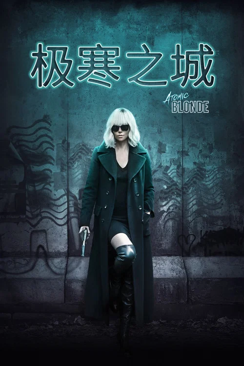
极寒之城 Atomic Blonde
「“名单不在她身上——在她脑子里的那部分，谁也拿不走。”」
剧情梗概
1989 年 11 月的柏林，墙还在，但所有人都知道它快塌了。军情六处特工洛琳·布劳顿被派来找一份名单——上面写着所有为西方工作的双面间谍。她的上线刚被人杀死在浴缸里，整座城市里每一方都想要这份东西：MI6、Stasi、KGB，还有她自己的上司。洛琳的办法是比所有人都更狠：白天审人，夜里杀人，每见一个人先判断他能出卖自己几次。
亮点
- 改编自安东尼·约翰斯顿的同名图像小说《最冷的城市》，背景是柏林墙倒塌前一周。
- 成本约 3000 万美元，全球约 1 亿美元——查理兹·塞隆主演并制片。
- 那段楼梯间打斗是全片签名：数分钟一镜到底的近身混战，塞隆亲身上阵，被剪成短视频之后成了 2017 年传播最广的动作场面。
- 索菲亚·波多拉演的神秘女孩、托比·琼斯与约翰·古德曼演的两位「管家」——这部片的每个配角都在演三张脸。
- 大卫·雷奇是《疾速追杀》系列的联合奠基者之一，本片是他第一部独立挂名的大制作导演长片。
- 全片的配色只有两种：血的红与柏林的蓝——墙越靠近倒塌，画面越冷。
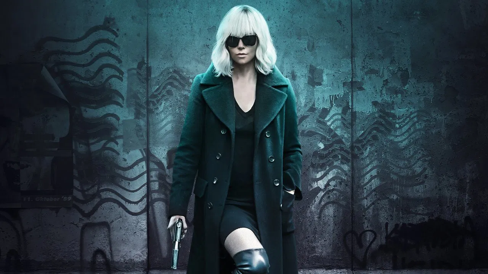
导演与主创 · 他们的历史作品
 美国队长3
美国队长3 侏罗纪世界
侏罗纪世界 死侍2
死侍2 时间规划局
时间规划局
 疯狂的麦克斯4：狂暴之路
疯狂的麦克斯4：狂暴之路 全民超人汉考克
全民超人汉考克 永生守卫
永生守卫 普罗米修斯
普罗米修斯
 分裂
分裂 X战警：天启
X战警：天启 X战警：第一战
X战警：第一战 玻璃先生
玻璃先生短评（轻微剧透）
轻微剧透：全片最大的反转是「名单从来不是一个东西，而是一个身份」——洛琳自己就是那份名单的最后一页。轻微剧透：雷奇最狠的一笔，是让所有阵营都以为在利用她，而观众直到最后一刻才发现她谁也没利用——她只是把每个人都用了一次。结尾她出现在巴黎，把整座城市的生死轻轻揭过——这是近十年最「凉」的间谍片结局之一。
为什么值得一看
想看「冷战间谍片能被拍得多风格化」的人；能接受剧情故意绕、动作场面极其疼痛、以及它本质上是一部「关于谁在利用谁」的密室电影的观众。R 级，建议成年观看。内地未映。看完想继续：《疾速追杀》系列（同导演奠基）、《谍影重重》（往期推荐过的冷战后特工故事）。
好时光 Good Time
「“我只想把我弟弟弄出来——用谁的钱、谁的命，今晚都不挑。”」
剧情梗概
康尼·尼卡斯和弟弟尼克抢了一家银行，事情办砸了：尼克被捕，康尼跑掉。保释金一万美元——康尼身上只有一堆脏钱和一个更脏的计划。他先去找女朋友，再去抢诊所，最后干脆带着一个刚认识的黑人女孩与一车陌生人冲进了医院。整个晚上他都在救弟弟，可每救一次，就多一个人被他拖进这个夜；等天亮了，他甚至连自己要去哪儿都不知道。
亮点
- 乔什与本杰明·萨夫迪兄弟联合执导，2017 年进戛纳主竞赛单元；丹尼尔·洛普坦的配乐是全片第二主角。
- 成本约 200 万美元，全球约 330 万美元——典型的作者电影账本，却换来了罗伯特·帕丁森职业生涯最好的一次表演。
- 帕丁森演的康尼几乎没有「帅」的瞬间：油头、汗衫、眼睛瞪得吓人——他主动要求把脸拍得难看。
- 全片大量启用非职业演员与实景夜拍：霓虹、监控探头、陌生的街道——纽约在这部片里不是背景，是共犯。
- 影片的时间压力全部来自「天亮之前」这个隐形 deadline：每一场戏都在往黎明推，而黎明对康尼来说不是希望，是结账。
- 烂番茄 91% / Metacritic 80 / IMDb 7.3 / 豆瓣 7.4——本期海外口碑最好的一部。
导演与主创 · 他们的历史作品
 原钻
原钻 天知道
天知道 Goldman v Silverman
Goldman v Silverman 原钻
原钻 粉碎机天知道Goldman v Silverman
粉碎机天知道Goldman v Silverman
 新蝙蝠侠
新蝙蝠侠 暮光之城
暮光之城 灯塔
灯塔 信条
信条短评（轻微剧透）
轻微剧透：全片最狠的一笔是康尼从头到尾没做错一件「大事」——他做的每一步单看都合理，合起来却把一个晚上拆成了所有人的地狱。轻微剧透：萨夫迪兄弟把「照顾家人」拍成了一种暴力：康尼爱尼克的方式，是替他把所有选择权拿走。结尾天亮了，他坐在陌生人的客厅里看早间新闻——这一夜上过电视，而没有人知道他是谁。
为什么值得一看
想看「一个夜晚能把一个人逼到什么地步」的人；能接受手持跟拍带来的窒息感、人物全员不可爱、以及它拒绝给任何角色发安慰奖的观众。R 级，建议成年观看。内地未映（上海电影节放映过），流媒体可看。看完想继续：《原钻》（同导演组合，往期推荐过的「一天崩溃指南」）、《天知道》（导演前作）。
嗜人之夜 The Night Comes for Us
「“他放了一个女孩一条生路，于是全城的人都来要他死。”」
剧情梗概
伊托是三合会最利的刀，替组织杀过的人他自己都数不清。一次任务里他动了不该动的念头：放走了一个目击整个屠杀的小女孩。组织下令清理门户，他的发小阿里安——如今是另一派的头面——带着全城的人马来取他的命。于是一个普通的夜晚变成了猎杀：从公寓到停车场，从码头到仓库，伊托用一整晚证明了一件事：他最强的一次任务，是保护一个孩子。
亮点
- 提莫·塔哈亚托导演、编剧，Netflix 在影片首映四天后就买下了全球版权——这个速度至今被独立片市场当作传说。
- 成本约 200 万美元；烂番茄 91% / IMDb 6.9 / 豆瓣 6.9——专业口碑与大众口碑罕见的持平。
- 伊科·乌艾斯（本期第 5 部《突袭》的主演）与乔·塔斯利姆再度同框，两个人的每一场对打都像在清算前作里的账。
- 朱莉·埃斯特尔演的「操控者」是全片唯一一个能让伊托停手的人——她的那场对决是近十年亚洲动作片里最疼的几分钟。
- 塔哈亚托的暴力是「卡通级」的：断骨、穿刺、血浆，密度高到需要观众自己调节呼吸；IndieWire 的评价很准：单场谋杀的巧思，胜过好莱坞整部电影的总和。
- 影片中段插入的大段闪回拖慢了节奏——这是它最大的短板，也是它没能更进一步的唯一原因。
导演与主创 · 他们的历史作品
致命录像带2 26种死法星球大战7：原力觉醒
26种死法星球大战7：原力觉醒短评（轻微剧透）
轻微剧透：全片最重的一场戏在停车场——伊托与阿里安打了十几年交情，也打了半部电影的架，两个人到最后都没有下死手，直到「操控者」出现。轻微剧透：塔哈亚托把「赎罪」拍成了体力活：伊托每杀一个人，就离那个小女孩远一步；而当他终于把孩子送上去机场的车，观众才发现这一夜他不是在逃，是在还。结尾码头那场一对多的决战，是全片唯一一次让暴力显得安静。
为什么值得一看
想看「动作片能把『疼』做得多具体」的人；能接受血浆不要钱、人物弧光极简、以及它本质上是一部「还债片」的观众。NC-17，仅建议成年观看。内地未映，Netflix 可看。看完想继续：《突袭》（本期第 5 部）、《突袭2：暴徒》、《26种死法》（导演参与的恐怖选集）。